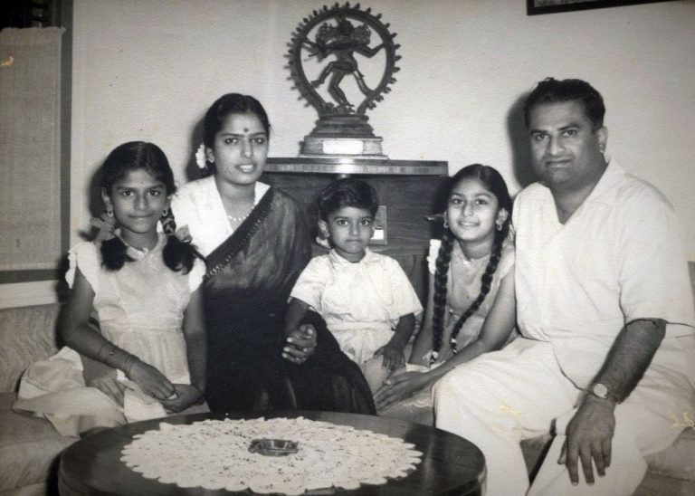
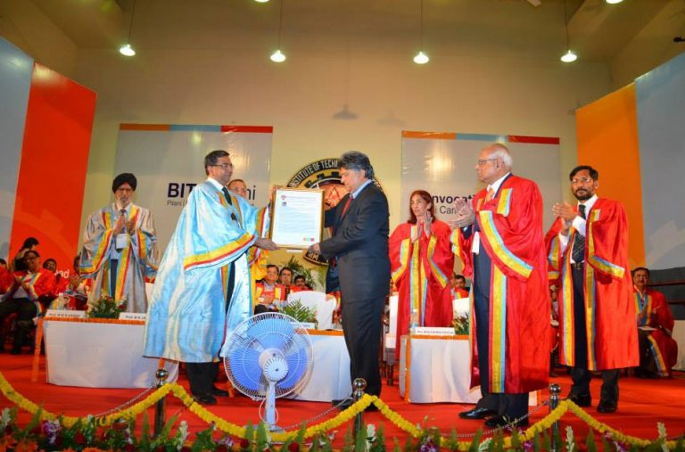
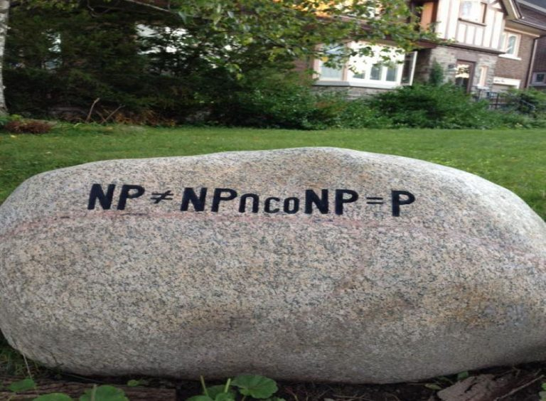
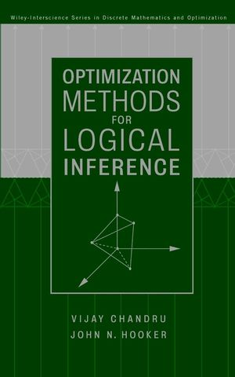
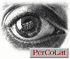
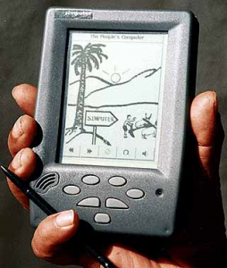
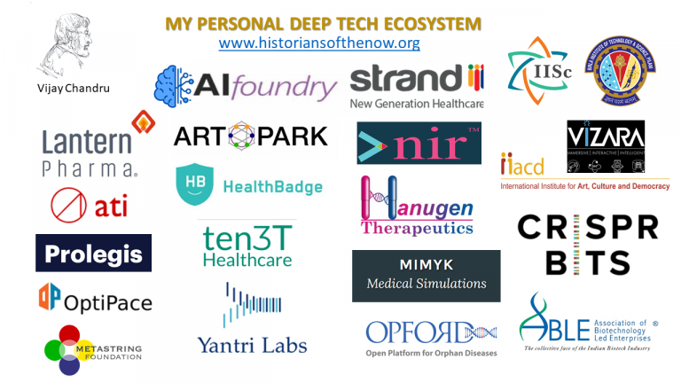

A Career in
Research & Innovation
Dr. Vijay Chandru is an academic and an entrepreneur. A technology pioneer of the World Economic Forum since 2006, recognized among the 50 pioneers of change by India Today magazine in 2008.

His academic career in decision sciences spanned over four decades at MIT, Purdue University and at the Indian Institute of Science. His training in electrical engineering at BITS (Pilani) and operational research at UCLA and MIT led him to explore academic research at the interface of computational mathematics with geometry, logic, machine learning, biology and heritage art.
A fellow of both academies of science and engineering in India, he was a national distinguished technologist of the Indian National Academy of Engineering, an adjunct professor in BioSystems Science and Engineering and Executive Advisor to the new ART Park at the Indian Institute of Science.
At Strand Life Sciences, India's first example of academic entrepreneurship, Professor Chandru served as founder executive chairman from inception in 2000 till 2018. The evolution of Strand from data science to precision medicine reflected the progress in molecular biology in the two decades following the human genome project.
A Privileged Childhood
I was born into a prominent family in Bangalore in 1953, the year that Mount Everest was officially scaled and the double-helical structure of DNA was officially solved. My father, Dr.H.G.V. Reddy was a lecturer in zoology at Bangalore University who had switched to the national civil services (IAS) out of a sense of duty to participate in nation building. He hailed from a family of lawyers dedicated to politics and public service. My mother was the only child of B.N. Reddi, a pioneer producer-director of Telugu films in Madras (now Chennai). Due to a combination of circumstances, my sisters and I were raised by my maternal grandparents in Chennai with my father playing a larger role after I had reached the age of eight.
I was a sickly child who had to be home schooled in 3rd grade because of ill health. My health improved considerably after my father, a skilled sportsman, moved to Chennai and took charge of my lungs and limbs. I swam and played cricket and tennis almost every day and my lungs settled. My father's interest in science was infectious although I was also fascinated by films and saw an average of 3 feature films a week in our private studios.
I was gifted in mathematics and Don Bosco's Matriculation School in Egmore had fabulous math instructors who gave me a lot of challenge problems to solve beyond the regular curriculum. My mind was made up to be an engineer when I interacted with my Dad's brother who was a chemical engineering PhD trained at the Imperial College in London. He had returned to be a technical director of the Shell Petroleum Company. I had an engineering drafting set and a slide rule by the time I hit my teens!

"I was born into a prominent family in Bangalore in 1953, the year that Mount Everest was officially scaled and the double-helical structure of DNA was officially solved."
— My mind was made up to be an engineer when I interacted with my Dad's brother.
The Oasis in Jhunjhunu District

"In 1970 I made the transition from the incredibly nurturing nest of my grandparents' home to the magnificent oasis of Jhunjhunu District."
A couple of my older cousins who had grown up in Delhi went to study mechanical engineering in BITS Pilani in the late 60s (BITS had been established in 1964) and I was keen to follow their lead. So in 1970 I made the transition from the incredibly nurturing nest of my grandparents' home to the somewhat rough and tough dormitory life in the magnificent oasis of Jhunjhunu District. Pilani gave us an outstanding 5 year undergraduate education in engineering sciences and I ended up enjoying every aspect of campus life to the extreme. I captained the cricket team, acted and directed in plays, played water polo and student politics.
My branch of choice was Electrical Engineering and I enjoyed working with hardware – I was into DIY electronics and had built my own audio amplifiers and a small medium wave radio transmitter in my room in Ashok Bhavan. I would transmit a "castor" music session late on Saturday nights – Doors, Pink Floyd, Supertramp, Deep Purple, etc. While building gadgets was more like a hobby, what really fascinated me intellectually was the mathematical complexity of signals, systems and control.
Entry into Computational Mathematics
My training in systems science began in 1975 when I was a Master's student in Engineering at UCLA tutored by Jacobsen, Leondes, Arunkumar, Erienkotter, etc. I moved to MIT for my PhD and my big influences there were Jerry Shapiro, Tom Magnanti, Ravi Kannan, Sanjoy Mitter, Richard Larson, Dmitri Bertsekas, Christos Papadimitriou and Jim Orlin. I wrote a thesis on computational complexity of super group methods in integer programming bringing together the exposure to theoretical computer science (Kannan) and Gomory constructions for integer programs (Shapiro). I could not have asked for better teachers.
My Guru and friend Jeremy F Shapiro, who sadly passed away in 2012, was a special man. Jerry taught me more than anyone else how to be courageous in research. He was never one to be unduly impressed by "reigning paradigms" – mutual admiration clubs trapped in cul-de-sacs of specialization.

"I wrote a thesis on computational complexity of super group methods in integer programming."
Mathematical Engineering at Purdue University

"In the mid-80s another important influence came from the late Bob Jeroslow at the ARIDAM workshops."
As a professor of engineering in Purdue University, I started looking at computational geometry in the mid-80s and together with a few graduate students and colleagues we worked on many aspects of optimization problems posed on planar and 3D geometries. I also became a part-time student again and studied algebraic geometry with (late) Shreeram Abhyankar – a colleague and a great mathematician at Purdue.
In the mid-80s another important influence in my research ideas came from the late Bob Jeroslow at the ARIDAM workshops at Rutgers. Bob asked integer programmers to look more closely at the interface of integer programming and logic. John Hooker of CMU and I responded to his call. My book with Hooker called "Optimization Methods for Logical Inference" published by Wiley Interscience was the culmination of a decade of joint work.
Breathes there the man with soul so dead
Who never to himself hath said,
This is my own, my native land!
Perceptual Computing Laboratory, IISc
I was soon ensconced at the Department of Computer Science and Automation at the Indian Institute of Science (IISc). The students from Molecular Biophysics Unit came over to ask me to teach them combinatorial computational geometry to use in exploring functional structural properties of proteins in biology. I got excited with the optimization models associated with minimum energy conformations also called the protein folding problem – the holy grail of structural biology.
By the mid-90's, I was increasingly concerned that my work at IISc continued to be quite abstract and unrelated to the society I lived in. I needed to look beyond the usual academic conquests. It was my great fortune that I discovered a few younger colleagues who felt likewise. So Swami Manohar, Vinay Vishwanathan, Ramesh Hariharan and I began our journey by first convening an applications lab at IISc, we called it the "Perceptual Computing Laboratory" (PerCoLat).

"By the mid-90's, I was increasingly concerned that my work at IISc continued to be quite abstract and unrelated to the society I lived in."
The Audacious Foursome

"In 1998, as a consequence of our focus on ICT for development, we had the concept design of the 'Simputer'."
In 1998, as a consequence of our focus on ICT for development, we had the concept design of the "Simputer", a unique handheld computer that would put India on the global technology map for innovation. Instead of getting into a lot of details, let me point the interested reader to the citation we received in 2001 from the New York Times as the ICT innovation of the year.
The Simputer project rolled into a dynamic startup called PicoPeta Simputers which brought out a commercial Amida Simputer in 2004. Picopeta was eventually merged into Geodesic, a public company based out of Mumbai. The transition from convening an applied lab to starting companies was a big step for a group of professors at IISc. It had never been done before and so we were pioneers in academic entrepreneurship in India.
My Personal Deep Tech Innovation Ecosystem
Mr Ratan Tata opened a door for us – at his first address to the Court of IISc in 1999, he asked why IISc did not have a visible spinoff culture of private companies. Almost immediately we asked what the process would be for us to launch companies. In a little over a year we were off to the races. It was October 2000 and we had permission to launch Strand Genomics and PicoPeta Simputers.
I joked with my wife that I was 47 years old and my response to a midlife crisis was Strand. From these beginnings, a comprehensive ecosystem of deep technology companies has emerged spanning genomics, artificial intelligence, robotics, healthcare technologies, and computational sciences.

"Mr Ratan Tata opened a door for us – at his first address to the Court of IISc in 1999, he asked why IISc did not have a visible spinoff culture."